merFISH hypoth. preopt. region
Source:vignettes/mouse_merFISH_preoptic_region_200909.Rmd
mouse_merFISH_preoptic_region_200909.Rmd#> Warning: This tutorial was written with Giotto version 0.3.6.9038, your version
#> is 1.0.4.This is a more recent version and results should be reproducibleStart Giotto
library(Giotto)
# 1. set working directory
my_working_dir = '/path/to/directory/'
# 2. set giotto python path
# set python path to your preferred python version path
# set python path to NULL if you want to automatically install (only the 1st time) and use the giotto miniconda environment
python_path = NULL
if(is.null(python_path)) {
installGiottoEnvironment()
}Dataset explanation
Moffitt et al. created a 3D spatial expression dataset consisting of 155 genes from ~1 million single cells acquired over the mouse hypothalamic preoptic regions.
Dataset download
The merFISH data to run this tutorial can be found here. Alternatively you can use the getSpatialDataset to automatically download this dataset like we do in this example.
# download data to working directory
# if wget is installed, set method = 'wget'
# if you run into authentication issues with wget, then add " extra = '--no-check-certificate' "
getSpatialDataset(dataset = 'merfish_preoptic', directory = my_working_dir, method = 'wget')Part 1: Giotto global instructions and preparations
# 1. (optional) set Giotto instructions
instrs = createGiottoInstructions(save_plot = TRUE,
save_dir = my_working_dir,
python_path = python_path)
# 2. create giotto object from provided paths ####
expr_path = paste0(my_working_dir, "merFISH_3D_data_expression.txt.gz")
loc_path = paste0(my_working_dir, "merFISH_3D_data_cell_locations.txt")
meta_path = paste0(my_working_dir, "merFISH_3D_metadata.txt")part 2: Create Giotto object & process data
## create Giotto object
merFISH_test <- createGiottoObject(raw_exprs = expr_path,
spatial_locs = loc_path,
instructions = instrs)
## add additional metadata if wanted
metadata = data.table::fread(meta_path)
merFISH_test = addCellMetadata(merFISH_test, new_metadata = metadata$layer_ID, vector_name = 'layer_ID')
merFISH_test = addCellMetadata(merFISH_test, new_metadata = metadata$orig_cell_types, vector_name = 'orig_cell_types')
## filter raw data
# 1. pre-test filter parameters
filterDistributions(merFISH_test, detection = 'genes',
save_param = list(save_name = '2_a_distribution_genes'))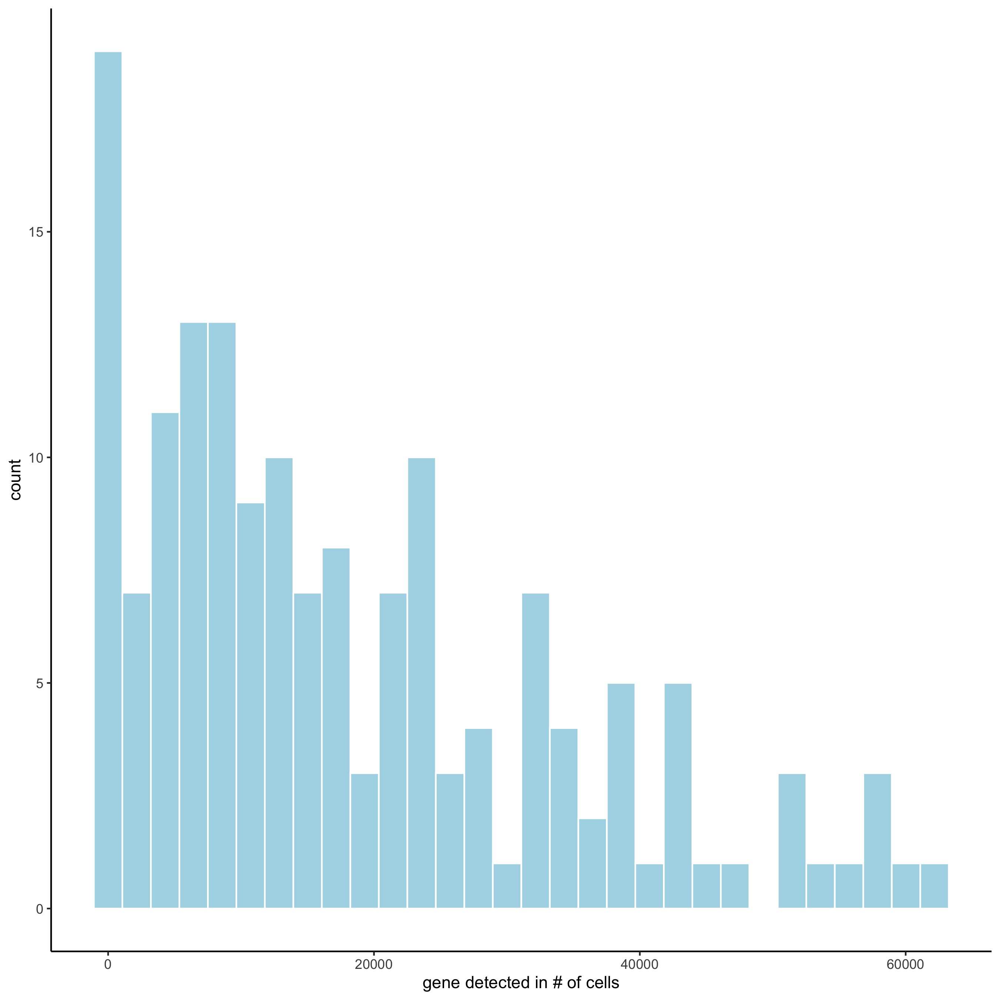
filterDistributions(merFISH_test, detection = 'cells',
save_param = list(save_name = '2_b_distribution_cells'))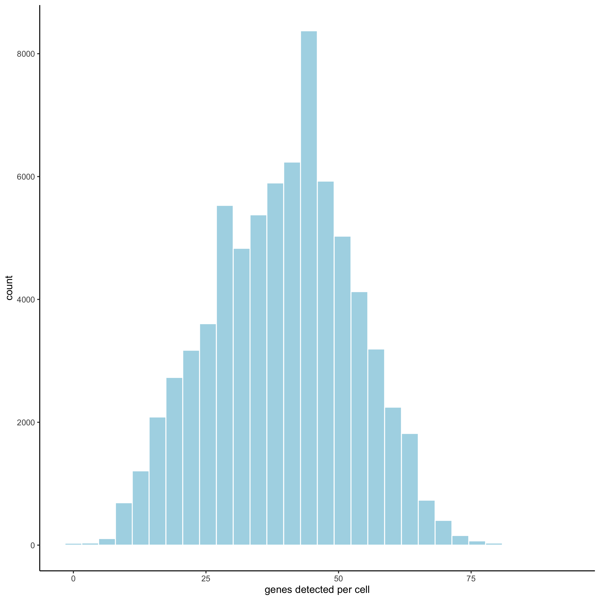
filterCombinations(merFISH_test,
expression_thresholds = c(0,1e-6,1e-5),
gene_det_in_min_cells = c(500, 1000, 1500),
min_det_genes_per_cell = c(1, 5, 10),
save_param = list(save_name = '2_c_filter_combos'))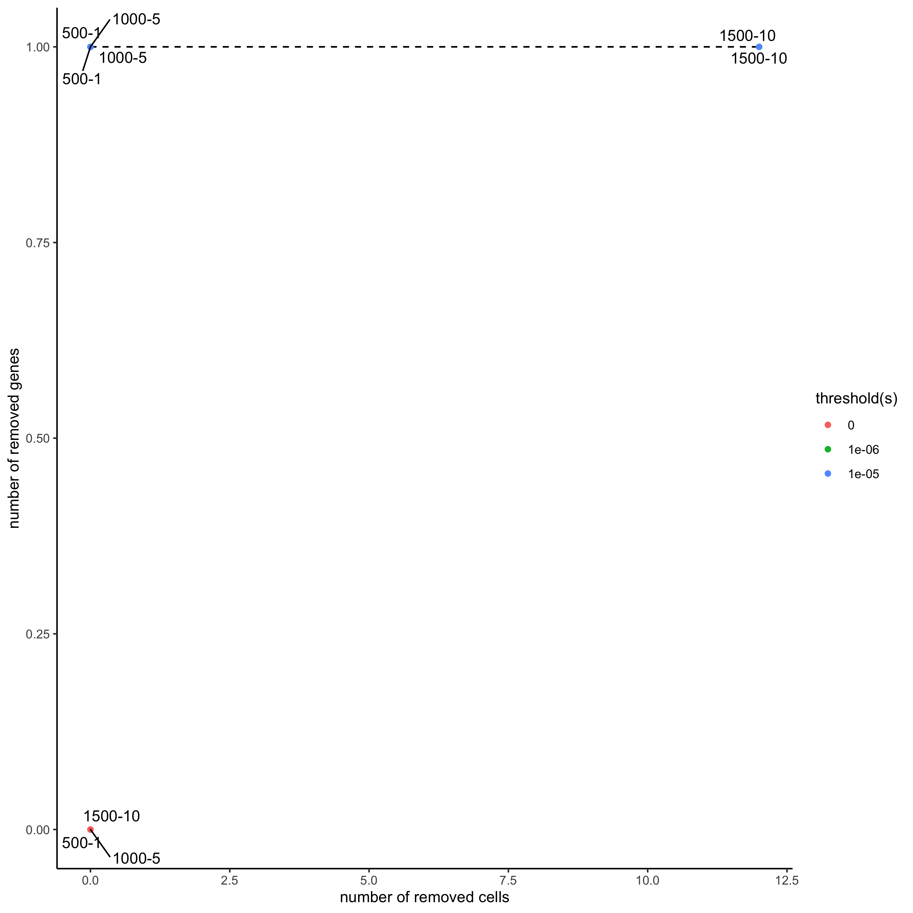
# 2. filter data
merFISH_test <- filterGiotto(gobject = merFISH_test,
gene_det_in_min_cells = 0,
min_det_genes_per_cell = 0)
## normalize
merFISH_test <- normalizeGiotto(gobject = merFISH_test, scalefactor = 10000, verbose = T)
merFISH_test <- addStatistics(gobject = merFISH_test)
merFISH_test <- adjustGiottoMatrix(gobject = merFISH_test, expression_values = c('normalized'),
batch_columns = NULL, covariate_columns = c('nr_genes', 'total_expr'),
return_gobject = TRUE,
update_slot = c('custom'))
# save according to giotto instructions
# 2D
spatPlot(gobject = merFISH_test, point_size = 1.5,
save_param = list(save_name = '2_d_spatial_locations2D'))
# 3D
spatPlot3D(gobject = merFISH_test, point_size = 2.0, axis_scale = 'real',
save_param = list(save_name = '2_e_spatial_locations3D'))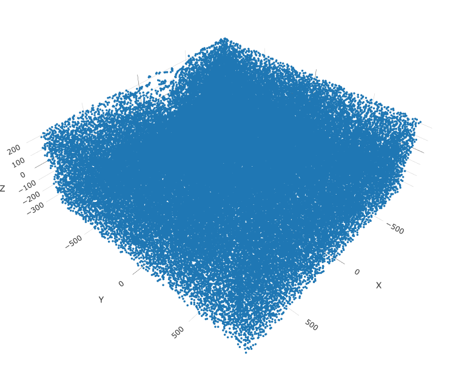
part 3: dimension reduction
# only 155 genes, use them all (default)
merFISH_test <- runPCA(gobject = merFISH_test, genes_to_use = NULL, scale_unit = FALSE, center = TRUE)
screePlot(merFISH_test, save_param = list(save_name = '3_a_screeplot'))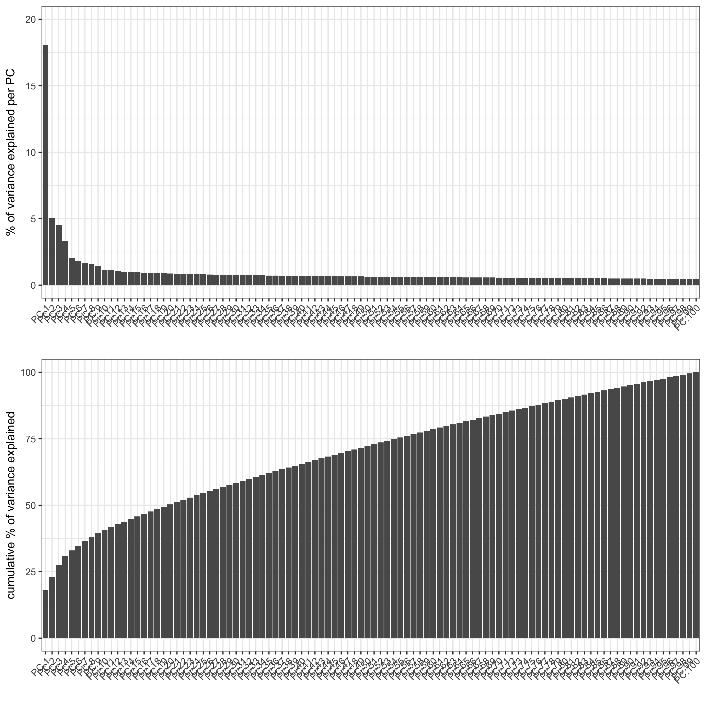
merFISH_test <- runUMAP(merFISH_test, dimensions_to_use = 1:8, n_components = 3, n_threads = 4)
plotUMAP_3D(gobject = merFISH_test, point_size = 1.5,
save_param = list(save_name = '3_b_UMAP_reduction'))
part 4: cluster
## sNN network (default)
merFISH_test <- createNearestNetwork(gobject = merFISH_test, dimensions_to_use = 1:8, k = 15)
## Leiden clustering
merFISH_test <- doLeidenCluster(gobject = merFISH_test, resolution = 0.2, n_iterations = 200,
name = 'leiden_0.2')
plotUMAP_3D(gobject = merFISH_test, cell_color = 'leiden_0.2', point_size = 1.5, show_center_label = F,
save_param = list(save_name = '4_a_UMAP_leiden'))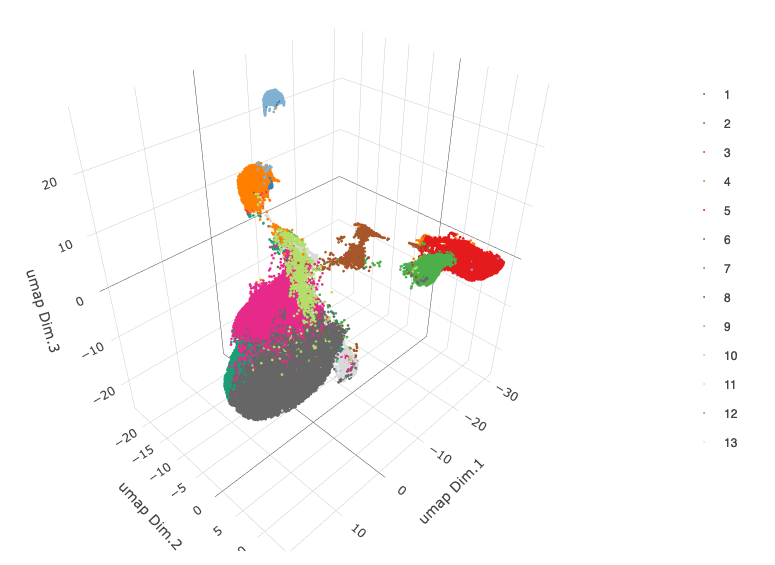
part 5: co-visualize
spatDimPlot3D(gobject = merFISH_test, show_center_label = F,
cell_color = 'leiden_0.2', dim3_to_use = 3,
axis_scale = 'real', spatial_point_size = 2.0,
save_param = list(save_name = '5_a_covis_leiden'))
spatPlot2D(gobject = merFISH_test, point_size = 1.5,
cell_color = 'leiden_0.2',
group_by = 'layer_ID', cow_n_col = 2, group_by_subset = c(260, 160, 60, -40, -140, -240),
save_param = list(save_name = '5_b_leiden_2D'))
part 6: cell type marker gene detection
markers = findMarkers_one_vs_all(gobject = merFISH_test,
method = 'gini',
expression_values = 'normalized',
cluster_column = 'leiden_0.2',
min_genes = 1, rank_score = 2)
markers[, head(.SD, 2), by = 'cluster']
# violinplot
topgini_genes = unique(markers[, head(.SD, 2), by = 'cluster']$genes)
violinPlot(merFISH_test, genes = topgini_genes, cluster_column = 'leiden_0.2', strip_position = 'right',
save_param = c(save_name = '6_a_violinplot'))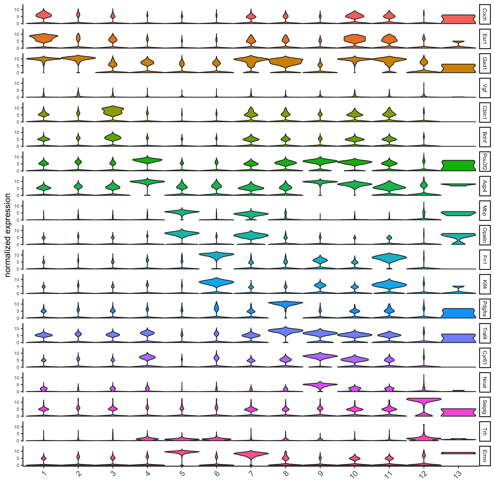
topgini_genes = unique(markers[, head(.SD, 6), by = 'cluster']$genes)
plotMetaDataHeatmap(merFISH_test, expression_values = 'scaled',
metadata_cols = c('leiden_0.2'),
selected_genes = topgini_genes,
save_param = c(save_name = '6_b_clusterheatmap_markers'))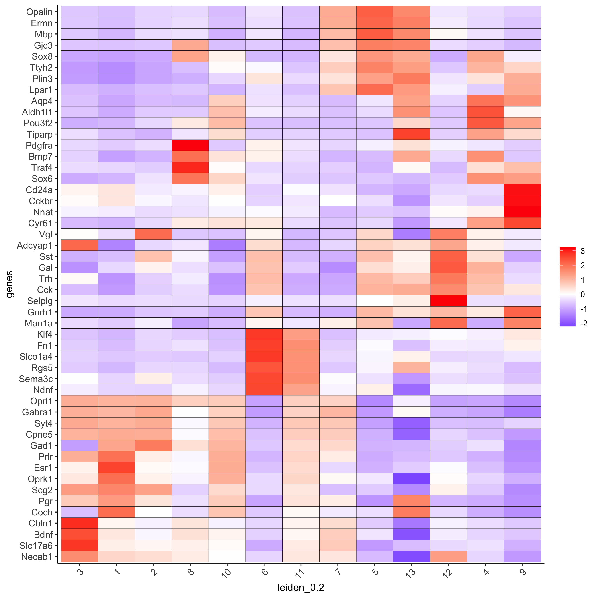
part 7: cell-type annotation
Annotation
# known markers and DEGs
selected_genes = c('Myh11', 'Klf4', 'Fn1', 'Cd24a', 'Cyr61', 'Nnat', 'Trh', 'Selplg', 'Pou3f2', 'Aqp4', 'Traf4',
'Pdgfra', 'Opalin', 'Mbp', 'Ttyh2', 'Fezf1', 'Cbln1', 'Slc17a6', 'Scg2', 'Isl1', 'Gad1')
cluster_order = c(6, 11, 9, 12, 4, 8, 7, 5, 13, 3, 1, 2, 10)
plotMetaDataHeatmap(merFISH_test, expression_values = 'scaled',
metadata_cols = c('leiden_0.2'),
selected_genes = selected_genes,
custom_gene_order = rev(selected_genes),
custom_cluster_order = cluster_order,
save_param = c(save_name = '7_a_clusterheatmap_markers'))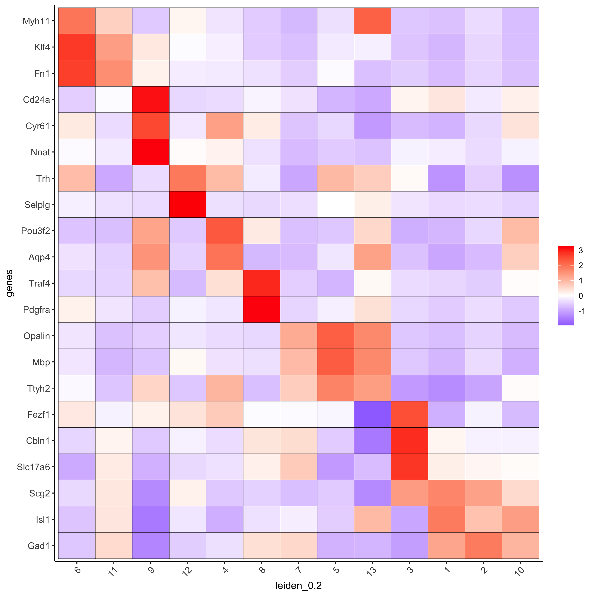
## name clusters
clusters_cell_types_hypo = c('Inhibitory', 'Inhibitory', 'Excitatory', 'Astrocyte','OD Mature', 'Endothelial',
'OD Mature', 'OD Immature', 'Ependymal', 'Ambiguous', 'Endothelial', 'Microglia', 'OD Mature')
names(clusters_cell_types_hypo) = as.character(sort(cluster_order))
merFISH_test = annotateGiotto(gobject = merFISH_test, annotation_vector = clusters_cell_types_hypo,
cluster_column = 'leiden_0.2', name = 'cell_types')
## show heatmap
plotMetaDataHeatmap(merFISH_test, expression_values = 'scaled',
metadata_cols = c('cell_types'),
selected_genes = selected_genes,
custom_gene_order = rev(selected_genes),
custom_cluster_order = clusters_cell_types_hypo,
save_param = c(save_name = '7_b_clusterheatmap_markers_celltypes'))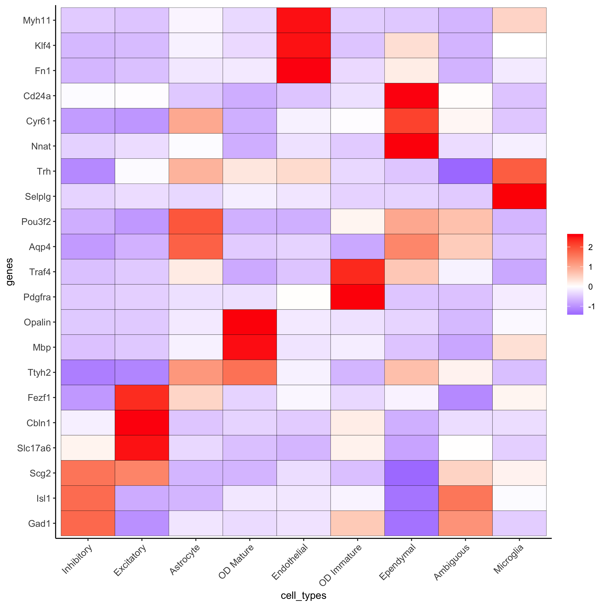
Visualization
## visualize ##
mycolorcode = c('red', 'lightblue', 'yellowgreen','purple', 'darkred', 'magenta', 'mediumblue', 'yellow', 'gray')
names(mycolorcode) = c('Inhibitory', 'Excitatory','OD Mature', 'OD Immature', 'Astrocyte', 'Microglia', 'Ependymal','Endothelial', 'Ambiguous')
plotUMAP_3D(merFISH_test, cell_color = 'cell_types', point_size = 1.5, cell_color_code = mycolorcode,
save_param = c(save_name = '7_c_umap_cell_types'))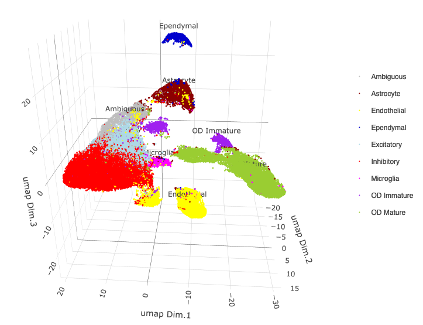
spatPlot3D(merFISH_test,
cell_color = 'cell_types', axis_scale = 'real',
sdimx = 'sdimx', sdimy = 'sdimy', sdimz = 'sdimz',
show_grid = F, cell_color_code = mycolorcode,
save_param = c(save_name = '7_d_spatPlot_cell_types_all'))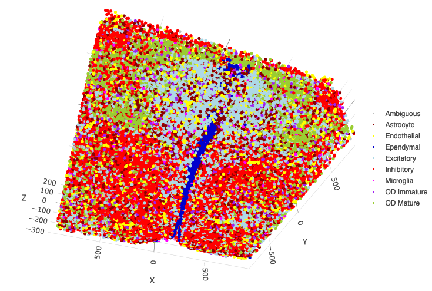
spatPlot2D(gobject = merFISH_test, point_size = 1.0,
cell_color = 'cell_types', cell_color_code = mycolorcode,
group_by = 'layer_ID', cow_n_col = 2, group_by_subset = c(seq(260, -290, -100)),
save_param = c(save_name = '7_e_spatPlot2D_cell_types_all'))
Excitatory cells only
spatPlot3D(merFISH_test,
cell_color = 'cell_types', axis_scale = 'real',
sdimx = 'sdimx', sdimy = 'sdimy', sdimz = 'sdimz',
show_grid = F, cell_color_code = mycolorcode,
select_cell_groups = 'Excitatory', show_other_cells = F,
save_param = c(save_name = '7_f_spatPlot_cell_types_excit'))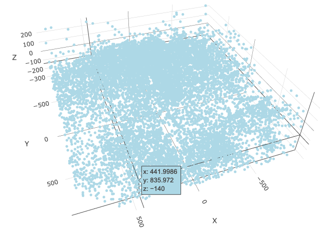
spatPlot2D(gobject = merFISH_test, point_size = 1.0,
cell_color = 'cell_types', cell_color_code = mycolorcode,
select_cell_groups = 'Excitatory', show_other_cells = F,
group_by = 'layer_ID', cow_n_col = 2, group_by_subset = c(seq(260, -290, -100)),
save_param = c(save_name = '7_g_spatPlot2D_cell_types_excit'))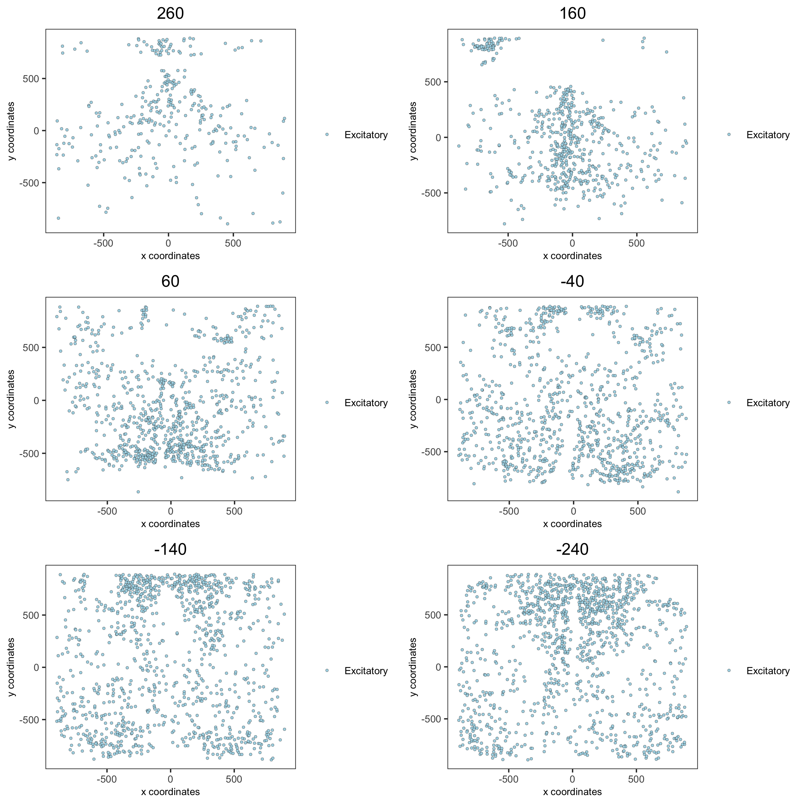
Inhibitory cells only
# inhibitory
spatPlot3D(merFISH_test,
cell_color = 'cell_types', axis_scale = 'real',
sdimx = 'sdimx', sdimy = 'sdimy', sdimz = 'sdimz',
show_grid = F, cell_color_code = mycolorcode,
select_cell_groups = 'Inhibitory', show_other_cells = F,
save_param = c(save_name = '7_h_spatPlot_cell_types_inhib'))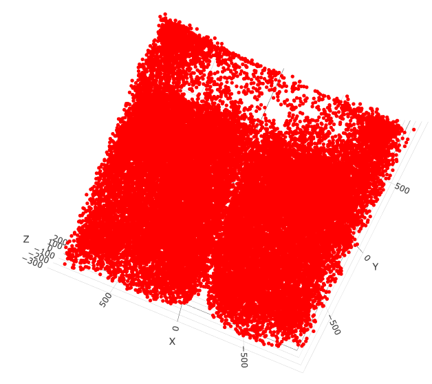
spatPlot2D(gobject = merFISH_test, point_size = 1.0,
cell_color = 'cell_types', cell_color_code = mycolorcode,
select_cell_groups = 'Inhibitory', show_other_cells = F,
group_by = 'layer_ID', cow_n_col = 2, group_by_subset = c(seq(260, -290, -100)),
save_param = c(save_name = '7_i_spatPlot2D_cell_types_inhib'))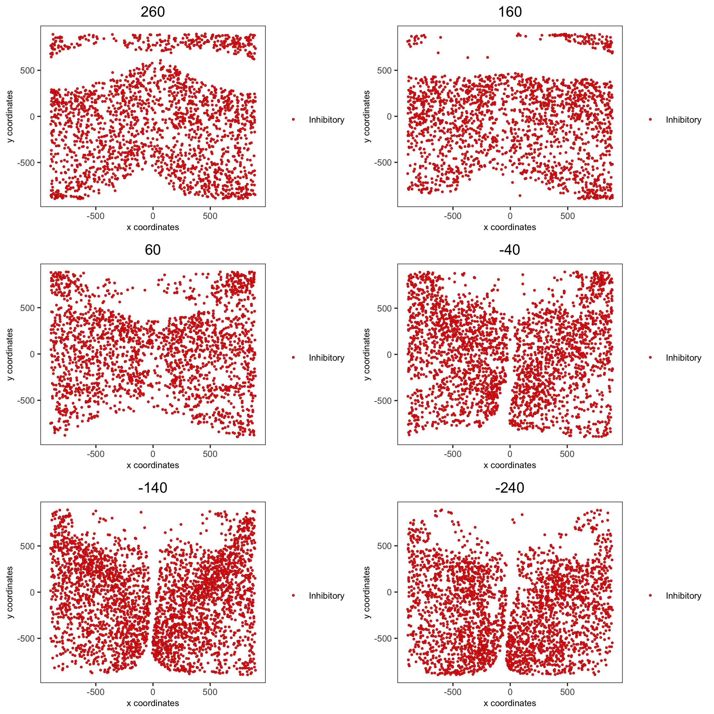
OD and astrocytes only
spatPlot3D(merFISH_test,
cell_color = 'cell_types', axis_scale = 'real',
sdimx = 'sdimx', sdimy = 'sdimy', sdimz = 'sdimz',
show_grid = F, cell_color_code = mycolorcode,
select_cell_groups = c('Astrocyte', 'OD Mature', 'OD Immature'), show_other_cells = F,
save_param = c(save_name = '7_j_spatPlot_cell_types_ODandAstro'))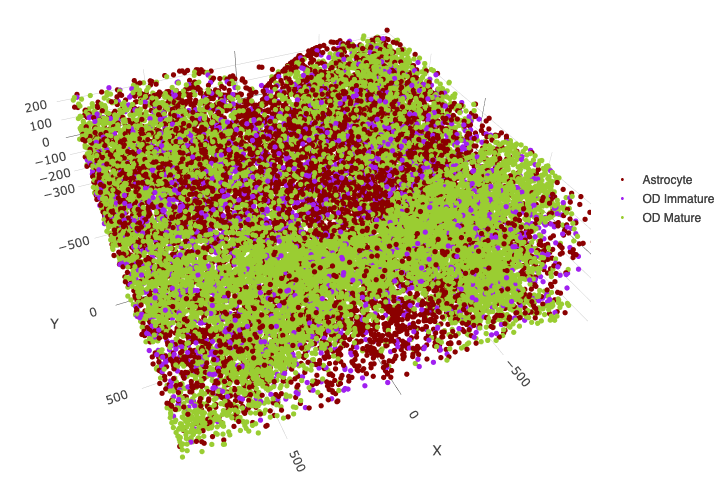
spatPlot2D(gobject = merFISH_test, point_size = 1.0,
cell_color = 'cell_types', cell_color_code = mycolorcode,
select_cell_groups = c('Astrocyte', 'OD Mature', 'OD Immature'), show_other_cells = F,
group_by = 'layer_ID', cow_n_col = 2, group_by_subset = c(seq(260, -290, -100)),
save_param = c(save_name = '7_k_spatPlot2D_cell_types_ODandAstro'))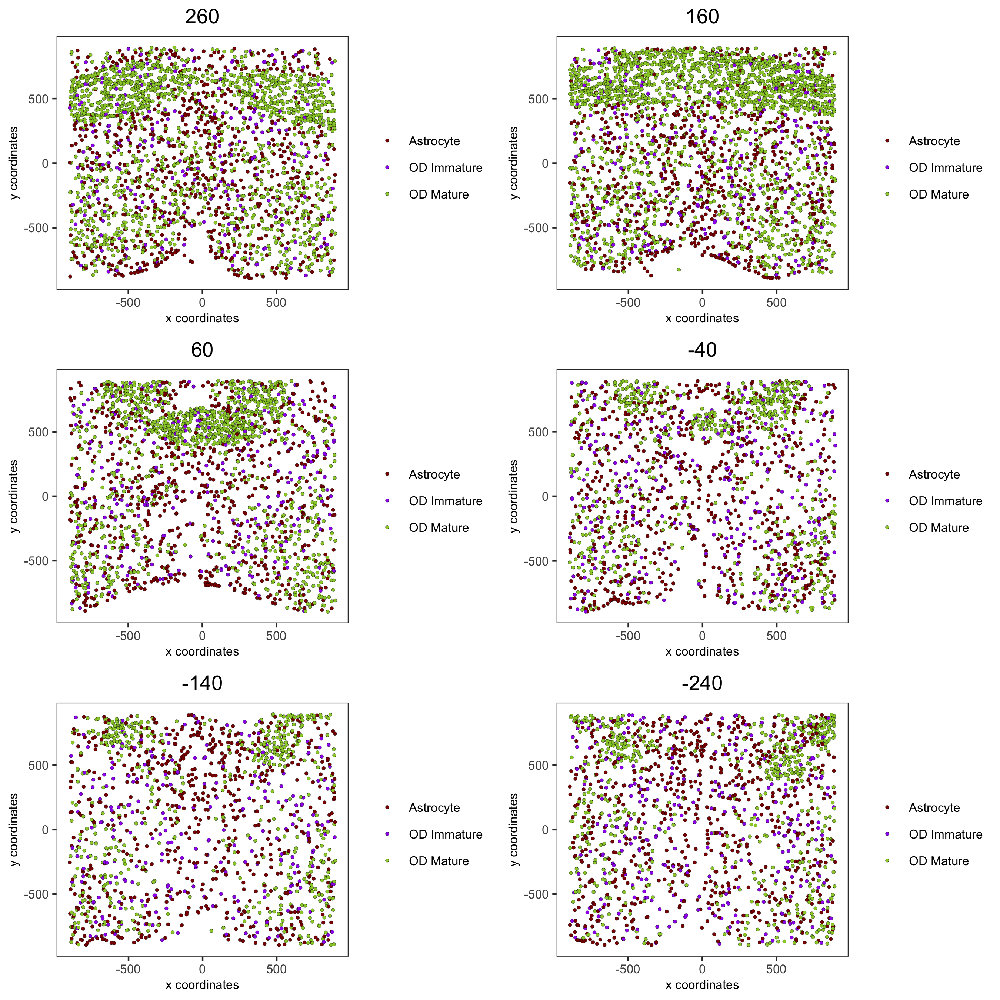
Other cells only
spatPlot3D(merFISH_test,
cell_color = 'cell_types', axis_scale = 'real',
sdimx = 'sdimx', sdimy = 'sdimy', sdimz = 'sdimz',
show_grid = F, cell_color_code = mycolorcode,
select_cell_groups = c('Microglia', 'Ependymal', 'Endothelial'), show_other_cells = F,
save_param = c(save_name = '7_l_spatPlot_cell_types_other'))
spatPlot2D(gobject = merFISH_test, point_size = 1.0,
cell_color = 'cell_types', cell_color_code = mycolorcode,
select_cell_groups = c('Microglia', 'Ependymal', 'Endothelial'), show_other_cells = F,
group_by = 'layer_ID', cow_n_col = 2, group_by_subset = c(seq(260, -290, -100)),
save_param = c(save_name = '7_m_spatPlot2D_cell_types_other'))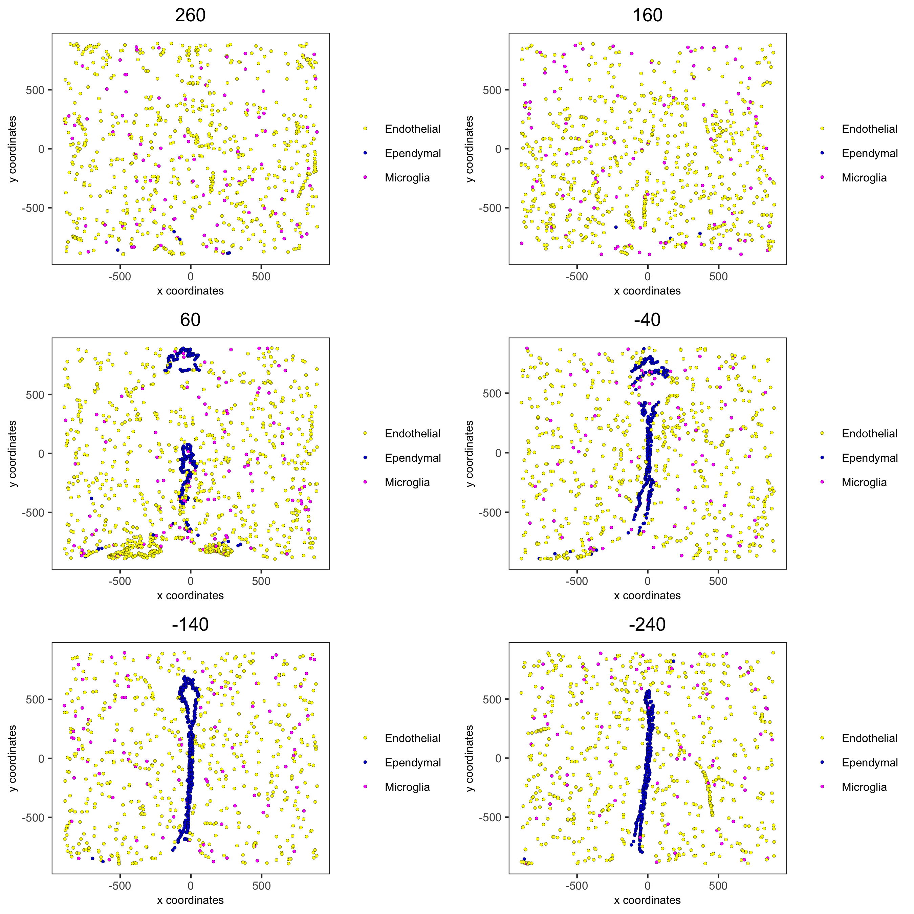